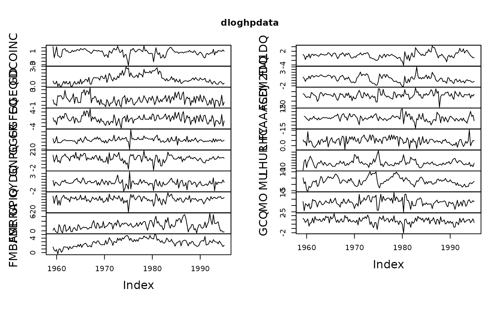

Hoover and Perez (1999) data
hpdata.RdData used by Hoover and Perez (1999) in their evaluation of General-to-Specific (GETS) modelling. A detailed description of the data is found in their Table 1 (page 172). The data are quarterly, comprise 20 variables (the first variable is the quarterly index) and runs from 1959:1 to 1995:1. This corresponds to 145 observations. The original source of the data is Citibank.
Usage
data(hpdata)Format
Datea factor that contains the (quarterly) dates of the observations
DCOINCindex of four coincident indicators
GDGNP price deflator
GGEQgovernment purchases of goods and services
GGFEQfederal purchases of goods and services
GGFRfederal government receipts
GNPQGNP
GYDQdisposable personal income
GPIQgross private domestic investment
FMRRAtotal member bank reserves
FMBASEmonetary base (feredal reserve bank of St. Louis)
FM1DQM1
FM2DQM2
FSDJDow Jones stock price
FYAAACMoody's AAA corporate bond yield
LHClabour force (16 years+, civilian)
LHURunemployment rate
MUunfilled orders (manufacturing, all industries)
MOnew orders (manufacturing, all industries)
GCQpersonal consumption expenditure
Details
The data have been used for comparison and illustration of GETS model selection in several studies of the GETS methodology, including Hendry and Krolzig (1999, 2005), Doornik (2009) and Sucarrat and Escribano (2012).
Source
Retrieved 14 October 2014 from: https://www.csus.edu/indiv/p/perezs/data/data.htm
References
David F. Hendry and Hans-Martin Krolzig (1999): 'Improving on 'Data mining reconsidered' by K.D. Hoover and S.J Perez', Econometrics Journal, Vol. 2, pp. 202-219.
David F. Hendry and Hans-Martin Krolzig (2005): 'The properties of automatic Gets modelling', Economic Journal 115, C32-C61.
Jurgen Doornik (2009): 'Autometrics', in Jennifer L. Castle and Neil Shephard (eds), 'The Methodology and Practice of Econometrics: A Festschrift in Honour of David F. Hendry', Oxford University Press, Oxford, pp. 88-121.
Pretis, Felix, Reade, James and Sucarrat, Genaro (2018): 'Automated General-to-Specific (GETS) Regression Modeling and Indicator Saturation for Outliers and Structural Breaks'. Journal of Statistical Software 86, Number 3, pp. 1-44.
Examples
##load Hoover and Perez (1999) data:
data(hpdata)
##make quarterly data-matrix of zoo type:
newhpdata <- zooreg(hpdata[,-1], start=c(1959,1), frequency=4)
##plot data:
plot(newhpdata)
##transform data to log-differences in percent:
dloghpdata <- diff(log(newhpdata))*100
##plot log-differenced data:
plot(dloghpdata)
